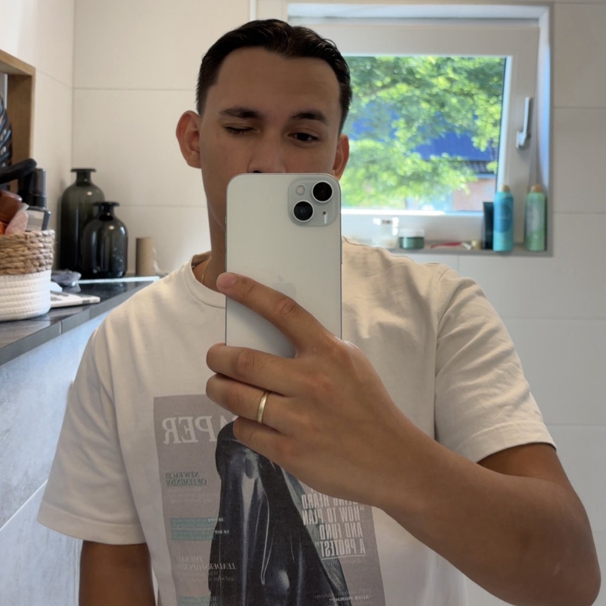

Noa
Podcast Member
Ik ben Noa, 21 jaar oud en eerstejaars student aan CMD. Mijn passies zijn reizen en eten en hier ga ik het met mijn vrienden over hebben in onze podcast.
Podcast Member
Ik ben Noa, 21 jaar oud en eerstejaars student aan CMD. Mijn passies zijn reizen en eten en hier ga ik het met mijn vrienden over hebben in onze podcast.
Podcast Member
Ik ben Raphael, 20 jaar en student CMD aan de HvA. Ik ben erg geïnteresseerd in andere culturen. Mijn reis naar Japan was een van de beste ervaringen uit mijn leven, en ik hoop nog meer te leren over andere landen.
Podcast Member
Ik ben Lorenzo, 20 jaar en student CMD aan de HvA. Met mijn Indonesische achtergrond heb ik altijd een sterke connectie gevoeld met andere culturen, vooral de Aziatische. Reizen is een van mijn grootste passies. Elk avontuur inspireert me om meer te leren over tradities en unieke verhalen van over de hele wereld.

In Rice Ninja's verkennen we de kleurrijke wereld van landen en culturen. Van Azië tot Europa, elke aflevering is een nieuwe reis. We bespreken wat verschillende landen bijzonder maakt en delen onze ervaringen.
Wij willen mensen verbinden door de verschillen en overeenkomsten van landen te verkennen. Met deze podcast brengen we je dichter bij unieke verhalen en ervaringen.